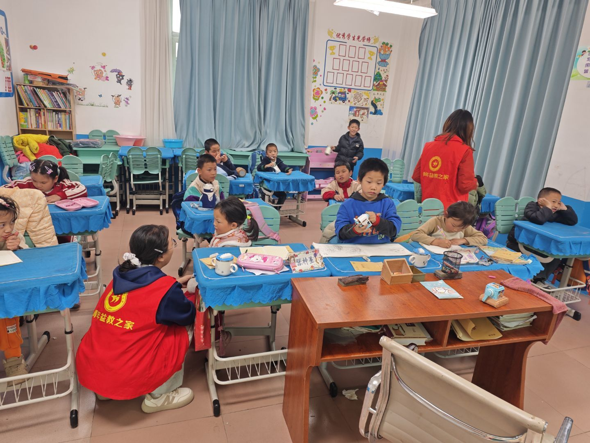
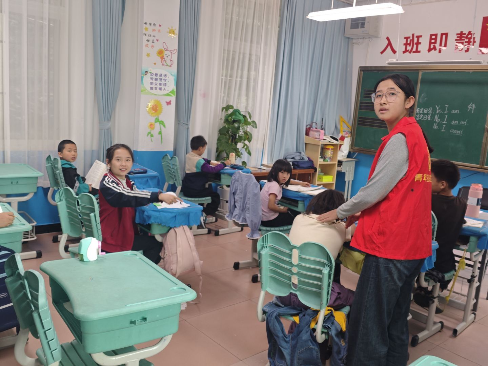
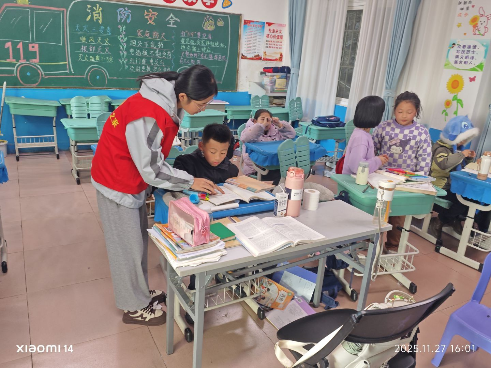
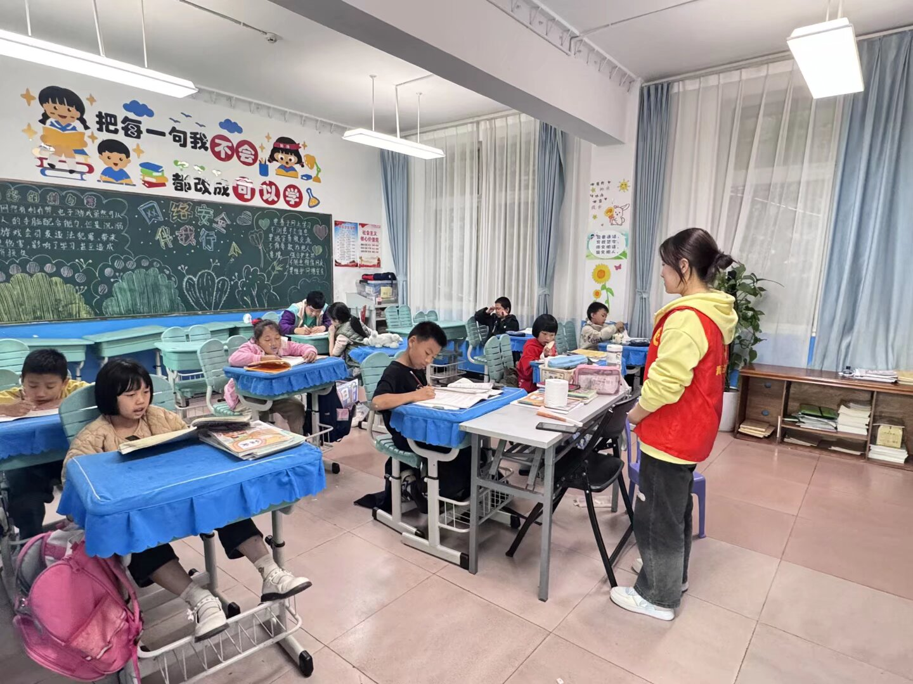
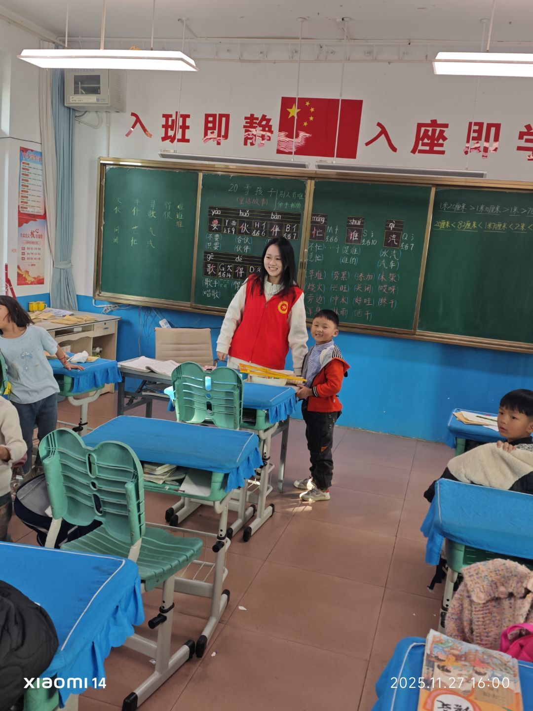
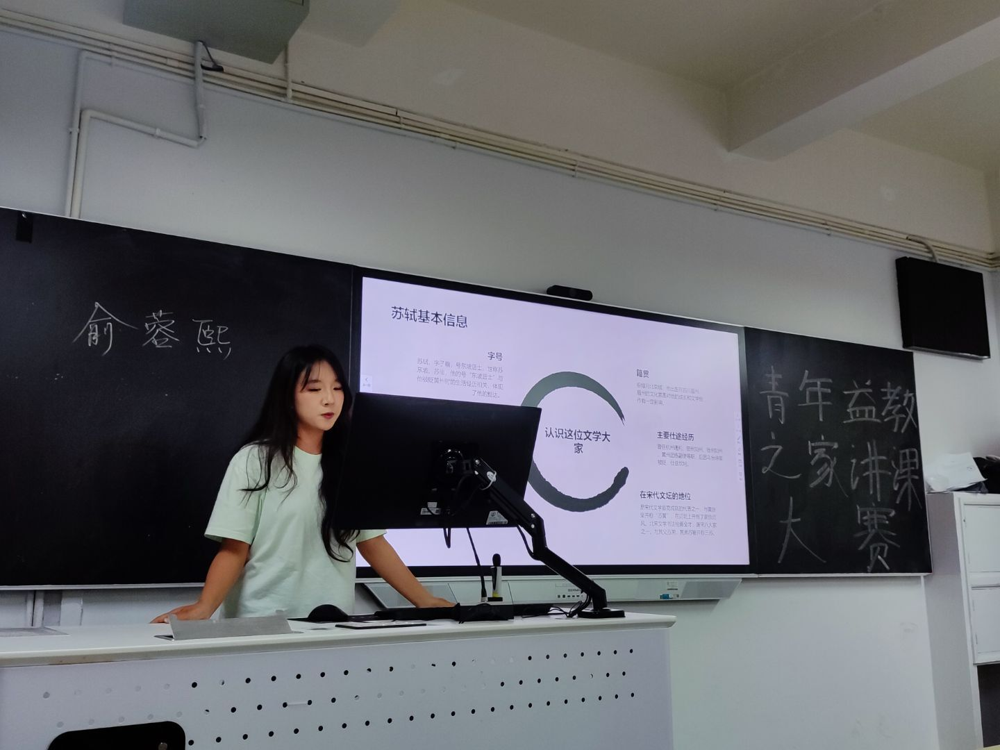
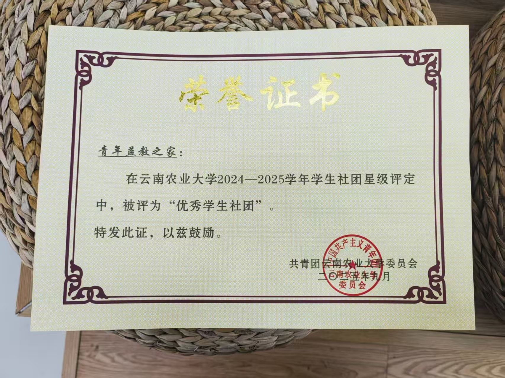
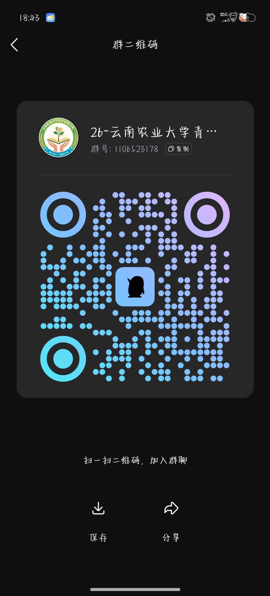

理事部
统筹重大决策，监督项目、财务与干部履职，把控整体发展方向。

向下浏览青年益教之家成立于校内公益育人实践阶段，以“以青年之力助学，用爱心传递温暖”为核心宗旨，汇聚在校热心学子，面向周边乡村留守儿童、社区青少年开展常态化公益支教服务。
社团现有在校社员百余人，长期开展课业辅导、趣味美育、红色研学、心理陪伴等特色益教活动。我们扎根本地乡村与社区点位，组织支教与公益课堂进校园，在陪伴中拓宽孩子们的认知边界。
从授课培训到教学复盘，青年益教之家持续提升社员的支教能力，让助学与育人双向生长。
从策划到课堂，从物资到陪伴，每一次出发都有人认真准备。
统筹重大决策，监督项目、财务与干部履职，把控整体发展方向。
策划公益活动，统筹人员调配、场地申报及成员招募、团建培训。
对接支教点位，筹备教案师资，跟进学生学情，落地各类益教课堂。
负责文书档案、通知传达、内部沟通与志愿服务时长统计。
采购保管物资，完成场地布置、现场保障与耗材维护。
对接校内外公益组织，拓展合作资源与长期实践基地。
照片里的每一束目光，都是我们继续出发的理由。

大学生助力乡村孩子拓宽眼界，补齐教育资源短板，收获陪伴与知识。

躬身基层实践，打磨授课能力，在一次次站上讲台中实现成长蜕变。

扎根乡土、体察民生，树立社会责任感，践行青年公益使命。

大学生助力乡村孩子拓宽眼界，补齐教育资源短板，收获陪伴与知识。

以讲课大赛积累实战经验，克服临场紧张，提升台风与课堂应变能力。
荣誉记录每一段被认真对待的公益时光，也提醒我们继续把温暖带往远方。

